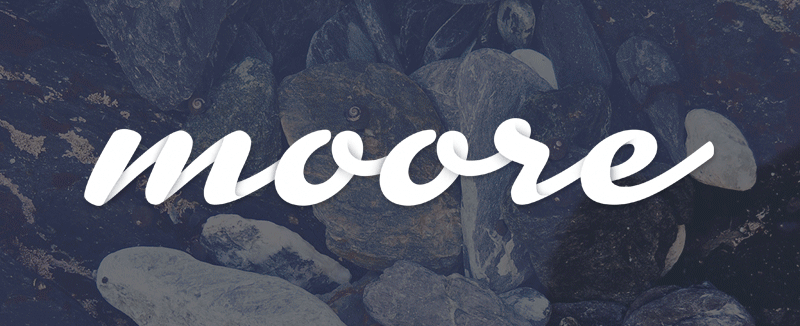

It’s time for a refresh.
This week I started the process out by coming up with a fresh new concept for a personal logo mark, visual styles and design elements.
I have only begun to make changes to my site by applying our latest theme Jetty and updating the visuals, but over the next few weeks I will relaunch my portfolio of the last decade’s work and announce new projects that the Style Hatch team is working on.
Also, starting next week I am launching a weekly email newsletter where I send out original articles, stories and insights designed to help you take action on your ideas, spark creativity, and brave the unknown. Subscribe to the newsletter now to make sure you get the first one that goes out Monday morning.
The photographs that appear in the animated GIF are from Folkert Gorter available under a CC Attribution 3.0 license.